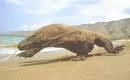
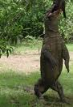
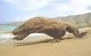
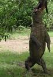

Komodo dragons have thrived in the harsh climate of Indonesia's Lesser Sunda Islands for millions of years, although amazingly, their existence was unknown to humans until about 100 years ago.
Reaching 10 feet (3 meters) in length and more than 300 pounds (136 kilograms), Komodo dragons are the heaviest lizards on Earth. They have long, flat heads with rounded snouts, scaly skin, bowed legs, and huge, muscular tails.
As the dominant predators on the handful of islands they inhabit, they will eat almost anything, including carrion, deer, pigs, smaller dragons, and even large water buffalo and humans. When hunting, Komodo dragons rely on camouflage and patience, lying in wait for passing prey. When a victim ambles by, the dragon springs, using its powerful legs, sharp claws and serrated, shark-like teeth to eviscerate its prey.
Animals that escape the jaws of a Komodo will only feel lucky briefly. Dragon saliva teems with over 50 strains of bacteria, and within 24 hours, the stricken creature usually dies of blood poisoning. Dragons calmly follow an escapee for miles as the bacteria takes effect, using their keen sense of smell to hone in on the corpse. A dragon can eat a whopping 80 percent of its body weight in a single feeding.
There is a stable population of about 3,000 to 5,000 Komodo dragons on the islands of Komodo, Gila Motang, Rinca, and Flores. However, a dearth of egg-laying females, poaching, human encroachment, and natural disasters has driven the species to endangered status.
 



click here to learn about the Nile Crocodile